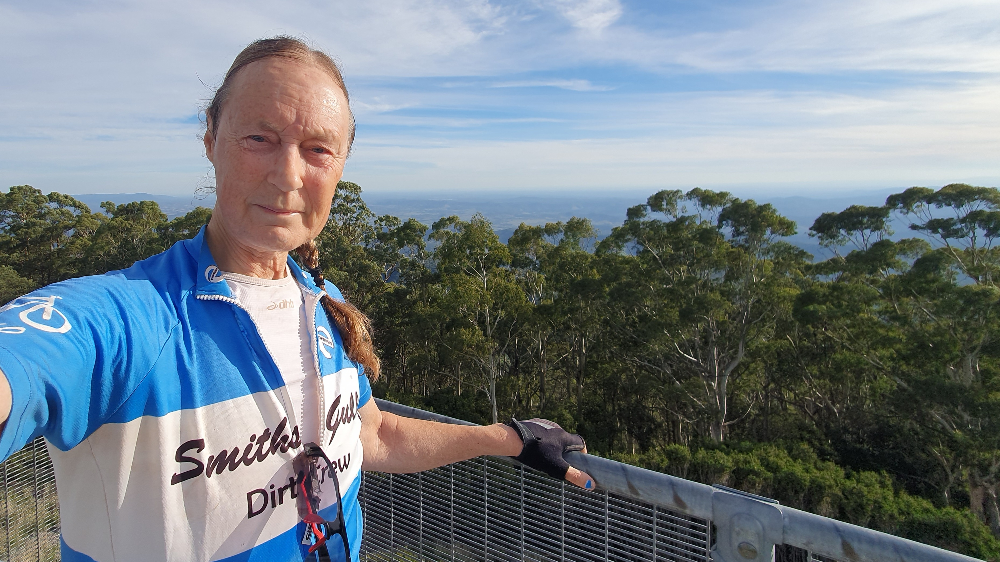
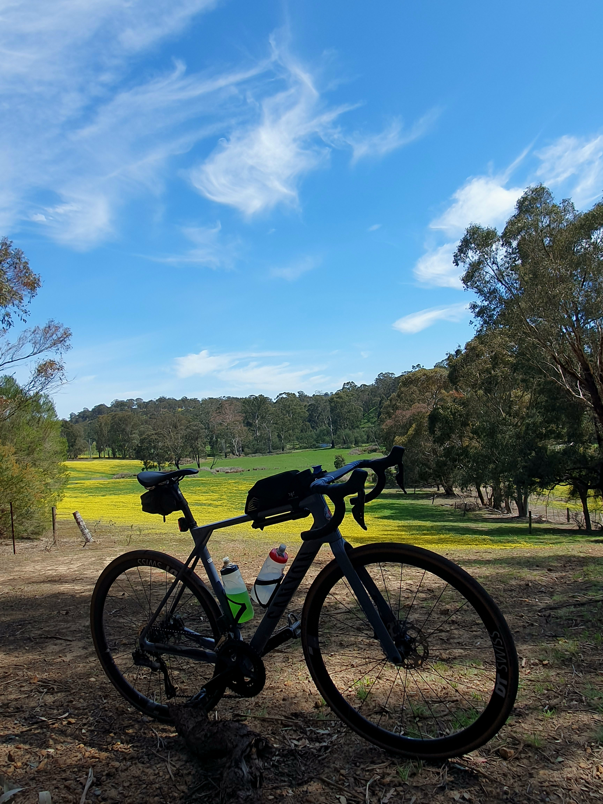
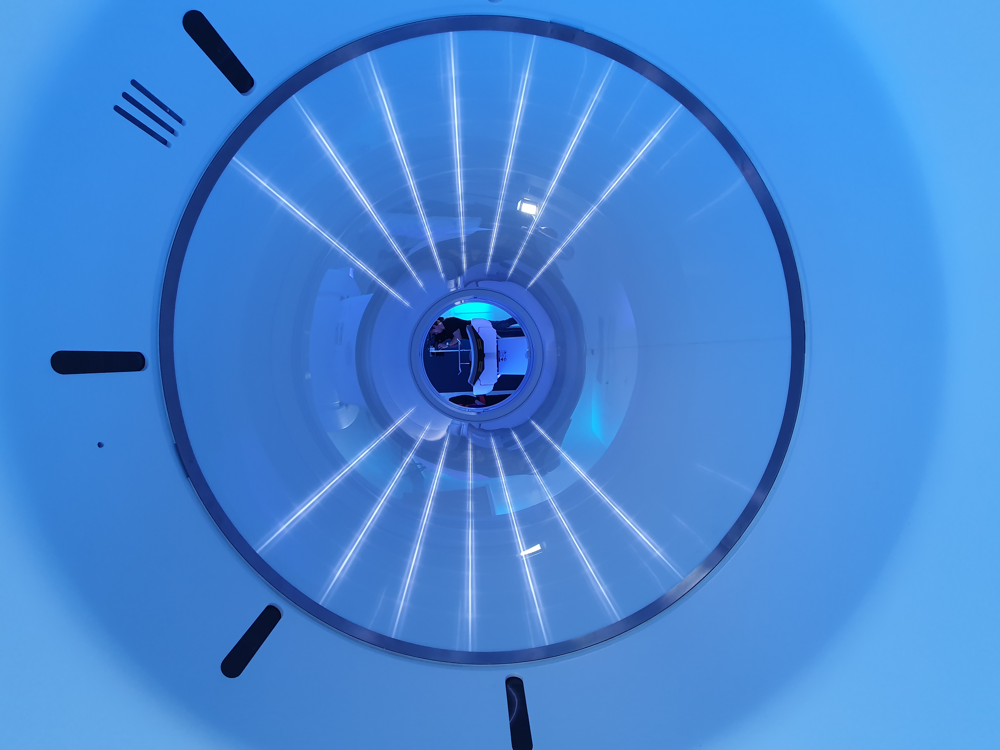
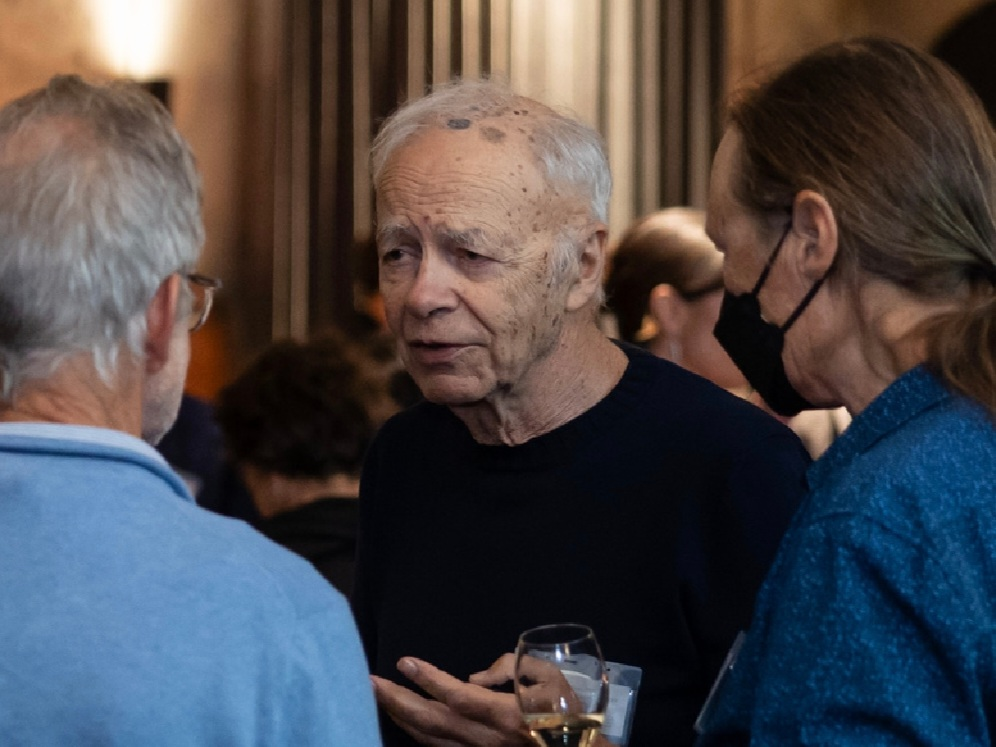
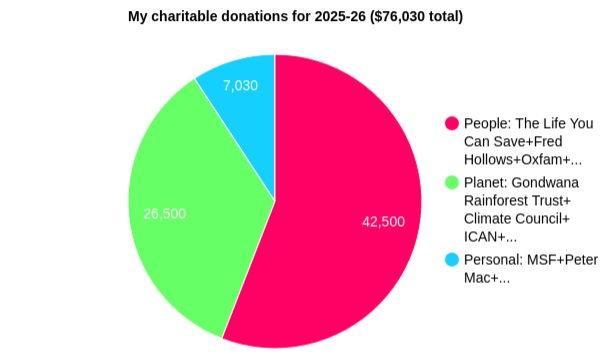

Previous, December 2021-April 2025. Back to start, December 2013
It was several weeks ago that I saw my oncologist. My PSA was up to 3.4 - a big jump in percentage terms but I'm still off the medication. However, fatigue has still been a nightmare and it is all a bit of a blur. After the Great Ocean Road ride I relaxed a bit, perhaps too much, and a week later a bout of fatigue ensued. When I had mostly recovered, and while I still had good fitness and strength, I decided to try a bike-packing trip where I carried a tent and sleeping gear. It is something I had been meaning to do for a long time. I was also keen to try some gravel roads that I had never ridden, check out the summit of Mt. St. Leonard and try "stealth camping" rather than staying at an official camp ground. It was a tough first day but successful - see the photo below. For the second day I had tentatively planned another mountain and a long ride home but after meeting an old school friend for a long breakfast I decided to take an easier route and catch a train through the Melbourne suburbs to get close to home.

More fatigue followed and around ten weeks ago I went to get my annual influenza vaccination. The pharmacist convinced me to also get a shingles vaccination. I did mention fatigue side-effects at the time but was assured it should be fine (I think the pharmacist may have been concentrating more about the rebate he would get from the government than my situation). I think I was a bit vulnerable and had impaired judgement. It has been a disaster. The first week was OK and I was hopeful I would have not bad reaction but then the fatigue kicked in. Three weeks in I could hardly walk. The reactions I have to other vaccines have eased after around a month and I've then been able to resume exercise and get my fitness back. On this occasion I started feeling a bit better and tried a couple of rides but the fatigue returned with a vengeance. And it has happened since then as well - even riding very slowly for a solid distance has been followed (after several days) by extreme fatigue. I have had some periods when I have been somewhat better, and managed to get away for a few days with my partner, but overall it has been pretty dire.
Too many days when I could hardly walk, when I couldn't think straight. Too much staggering around the house and garden with no energy even to go to a local cafe with the family for lunch. Too many hours of mindless scrolling through social media on my phone. Too many times when I've had to crawl up the stairs to have a shower. Too many times I've though that getting dressed shouldn't take this much effort. Sometimes I wonder if it will ever end. And I wonder what things will be like when I go back on the cancer medication and my body has another cause to be fatigued. But I struggle on. I try to tell myself I've been like this before and recovered. And I can still be effective at coding when I can't do anything physical, even with a foggy brain. I don't know why I'm not recovering. I don't know why I can't figure out how to end this blog entry without a cliche, but life goes on.
The fatigue I strongly suspect was caused the vaccine (more specifically, the adjuvant component of the vaccine) eventually eased somewhat then I was hit by a severe bout of gastroenteritis, which took weeks to recover from. Five days ago I did my first longer ride for ages - a (normally) "easy" 100km with no major hills, though on this occasion battling a head wind for the second 50km was far from easy. However, the next day I felt OK - the best I had felt for quite a while. Two days later I had my oncologist appointment. I didn't think too much about it beforehand but expected the result to be bad, resulting in starting the medication again. Indeed, my PSA level had risen to 19 and medication was called for. I was resigned to it but hadn't realised just how much it had risen until I checked later, plus it's the highest reading since my diagnosis. It had a somewhat delayed impact on me. It seems my PSA exhibits faster than exponential growth. I wonder if there is some kind of positive feedback and the cancer is not just doubling but also changing the environment so it can grow even faster. Or is each cancer cell also releasing more PSA? Perhaps the oncologists understand such things or perhaps not. At this point it probably doesn't really affect the best treatment options anyway.
When I stopped taking the medication, almost a year ago, it took over a month for the fatigue to ease but the morning after the first dose I felt the fatigue return (pretty unfair, right?) and yesterday morning it was really weighing me down. Despite this, I set off on my first "proper" ride (>100km and >1000m of climbing) for a couple of months. It was very hard work, especially at first, and I was slow but it was nice to be out on country roads again, with pretty views (see pic below). I was a bit wiped out for the rest of the day but today I felt significantly less fatigued. I'm attempting to draft this blog entry while pedalling on an exercise bike in the lounge room, trying to avoid the slide into more fatigue.

Having completed the ride yesterday I bit the bullet and signed up for the Peter Mac fundraiser I've been doing for several years now. Given my current fitness I was relieved to find that the maximum distance option was 250km (I'm sure it was 500km in the past). I always aim high. A few years ago I probably would have knocked off 250km in the first day if the weather was good. It's rather unlikely this time, but the distance seems achievable. Please sponsor me via this link. Thanks in advance! The money raised goes to help cancer research at Peter Mac.
Cancer research, along with much of science, is in a pretty dire situation currently. Under president Trump there is a war on truth and that extends to a war on science, including medicine. For many years, the USA has produced more research on medicine and many other areas of science than the rest of the world combined. But research programs have been stopped in their tracks and re-starting them will be difficult. All the more reason to support research at Peter Mac. I fully understand the attraction of rejecting truth and replacing it with beliefs that make us feel better - reality can be pretty bloody nasty, even for rich white men such as myself. But we do so at our peril. Reality is resilient and has a way of rearing its ugly head and bursting the fantasy bubbles we create, no matter how much faith we have in them. Sure, some fantasies make people feel better and do no harm. But fantasy-based policies concerning research (and other things) do harm, to future generations.
Managing the fatigue from the medication has been a challenge but the medication certainly works. My PSA reduced to 1.1 (a few weeks ago now). My fundraising was successful (thanks to those who donated) and I was the fourth highest individual fundraiser listed. Just before it finished (having ticked off all the other achievements) I decided to join a team from Peter Mac who were celebrating twenty years of using PSMA (Prostate Specific Membrane Antigen) for PET scan imaging and treatment of prostate cancer. They were excited to have their fundraising total increased substantially and also excited about a new machine being installed in their lab. They contacted me and I was able to see the machine while is was being assembled, and before it was announced to the world (so I wasn't able to disclose any details until the official launch). It is the first whole-body PET scanner (plus CT scanner) installed anywhere in the world and is a tribute to the scientific excellence of the researchers at Peter Mac.

I raved a bit about the science behind PSMA PET scans previously. What used to take fifteen minutes takes just two minutes with this machine, resulting in much higher resolution images and requiring a lower dose of the radioactive chemicals. A scan results in around a terabyte (a billion billion bytes) of information that is processed with an impressive array of GPUs (graphical processing units), allowing many thousands of computer instructions to be executed concurrently to produce the 3D image used by the oncologists. I was also asked to be one of two patient representatives at the launch of this machine, plus other amazing technology in a lab devoted to microscopy. I got a tour of this lab also, which utilises some different amazing science. For example, using infra-red lasers to image cells inside a cancer. Because of my fundraising efforts, I was able to go on yet another lab tour - one that was concentrating on using immunotherapy to treat cancers. Lots of containers of reagents, living cells, zebra fish etc, plus centrifuges, freezers, incubators and the like. Very little by way of computing, but close by in the building they have access to the imaging technology, DNA sequencing and so on.
OK, if you are not into science, thats all a bit blah, blah, blah. How am I? My fitness is gradually improving. I've had some very low energy days but nothing too extreme and the same goes for my mental health. Very soon (weather permitting) I'll be celebrating twelve years of survival.
In mid-January my PSA had dropped to 0.37 and I stopped taking Enzalutamide again. Today it was back up to 1.8. The third significant figure wasn't mentioned - I suspect the oncologist just didn't want to tell me (addendum: 1.85). He is still hopeful I'll be able to stay off the medication until the end of the year, though I'm rather doubtful. It took two months of being off the medication before the fatigue finally wore off. I had three months of severe fatigue - the worst episode I've ever had. Much of the time I had trouble walking. Crawling up the stairs to get to the shower became the norm. Typical days were spent staggering around the house and back yard, scrolling through social media feeds like a zombie and fighting brain fog to try to get some work done on my computer. On a couple of occasions I rode a bit over a kilometre and getting home was a huge effort. One morning we were meeting a friend at the cafe across the road from our house. I made it half way across the road and had to be helped the rest of the way. Bloody awful.
In early December I was attempting to get some fitness back and had another bike accident. It was annoying but didn't seem too bad at the time. In retrospect I may have been slightly concussed and fell quite heavily on my coccyx. For the few days I tried to keep riding but the pain got too severe. Perhaps there was I minor fracture - I don't know. Without exercise my fatigue worsened - a downwards spiral. My fitness dropped to its lowest level since I was first treated for prostate cancer. In the last couple of weeks I've been able to start exercising again but it's a slow, hard process.
I have managed to get a bit of research done. I persuaded a couple of colleagues to help with a paper I've been hoping to write for many years. I mentioned it briefly when I spoke at my department farewell dinner in 2013. The tentative title is somewhat grandiose: A Mathematical Theory of Correct Computation. The part of my brain used for mathematics had not been used for many years and was in very poor shape at first but with (mental) exercise it has improved. I'm also working on a very fundamental paper about set similarity again. I had very much hoped it would be published at some point. It came out of work on debugging but is relevant to a huge range of scientific research. I had almost given up on getting these ideas published but I'm now more hopeful. The journals may not be great but I think that the success of artificial intelligence using large language models has important consequences for scientific publication. Previously, research would only have impact if humans read the papers and it's very hard for a single person to keep up with all the relevant literature, especially papers published in more obscure journals. Now papers can be used to train AI systems, which may not have a deep understanding but have a huge capacity for sucking up information.
It was close to a month ago I saw the oncologist again. PSA up to 6.49 - even worse than expected. It looks like I'll be back on the nasty fatigue-inducing medication again after next visit. I did manage to get some fitness back in my time off the medication, to the point of doing a 200km ride. Tough work. But my fitness plateaued and has fallen again due two more bouts of extreme fatigue for no apparent reason. Recently the more severe bouts of fatigue have started with severe depression as well. Getting motivated to ride has been difficult. I would like to say more but I don't have the energy right now - I'm struggling to walk. I just want to finish off a blog post so it's not hanging over me. It's the winter solstice, so a time to be optimistic I guess, but that's not how I feel. Perhaps I'll add more when I feel a little better.
As expected, my PSA jumped up again, to 16.56. Not quite as much as we feared but enough for the oncologist to strongly recommend going back on the medication. The first day on the medication I surprised myself and did a solid ride, with more climbing than any other ride all year. It's been a couple of weeks now and I've been on another downward spiral. The weather hasn't been conducive to riding, I've been working on paper revisions and struggling with motivation to get out and exercise. The paper on Similarity to a Single Set was published in April and the one on A Mathematical Theory of Correct Computation has been written, submitted, revised a couple of times and looks set to be accepted and published soon (fingers crossed). Considering these were the two papers I had hoped to get published when quitting paid work back in 2013, you might expect me to be happy about it. I'll have to make do with lack of regret. I've also been interviewed and filmed again to plug the National Imaging Facility (more whole body PET scanners and the like). The video will be released shortly, for National Science Week. Here is it!
In recent years I've been riding my bike to raise funds for Peter Mac (the cancer hospital I'm treated in) but that event has been discontinued and I decided to take part in Fred's Big Run to raise money for the Fred Hollows Foundation (if you could make a donation via that link it would be greatly appreciated). I'll actually be cycling (of course) rather than running and haven't done a great deal so far. Although cancer research is close to my heart, preventing and curing blindness is a far more effective way of improving people's lives. I've been donating to the Fred Hollows Foundation for many years and was happy this and some of the other charities I give to received the tick of approval from The Life You Can Save, set up by Peter Singer and others to help evaluate how effective charities are. Today I caught up with some TLYCS Melbourne people, having heard about the group at Peter Singer's 80th birthday party (pic below). I was rather chuffed to be invited. I have mixed feelings about money bringing access in general but this was a positive example. I'm not sure how much time and energy I'll be able to devote to growing effective altruism but it does provide a solution to my (excess) money problems.

Warning: this gets rather dark - brace yourself and remember there is help available if you are severely affected (see the phone number at the bottom of this page). It's over a month since my last oncologist visit - PSA down to 3.85, so the medication is still combatting the cancer and I'm still taking it. I had more blood tests a couple of days ago and hopefully they will show a further drop and I'll be able to take a break from Enzalutamide again from next week. I suggested to my oncologist that we try Bicalutamide again when I stop Enzalutamide, to try to slow the increase in my PSA. It would be an unusual strategy, going back to a treatment we gave up on. But after stopping Bicalutamide my PSA increased much faster (we thought it might even decrease) so it seems it was doing some good and it might give me a longer break from Enzalutamide, with the nastier fatigue side-effects it entails.
Life has been a nightmare of fatigue. Staggering around the house and back yard and rarely going beyond the front gate, crawling up the stairs to shower, trying to fight the brain fog to work on my computer, descending into mindless scrolling through social media on my phone or just going back to bed. Any thoughts about maintaining fitness have vanished. Getting the blood tests done, a little over 1km away, pushed me further than a 300km ride. I did get that paper published, have been working very slowly on another, and produced a pie chart of my charitable donations for the last financial year (inspired by one of the effective altruism folk, see below), but life has been a long way from a full and enjoyable. At one point I couldn't stop thinking about ways I could kill myself without traumatising other people significantly. It didn't help that an extended family member suicided soon afterwards, in a way that did traumatise others. They had attempted suicide multiple times in the past and by all accounts their life did not bring joy to themselves or others, but it's still sad.

I figured that my extreme level of fatigue should not be caused by just Enzalutamide plus the unavoidable CFS/ME, years without testosterone and aging. I took extra B vitamins and iron supplements in case I was low on B12 or iron again but eventually saw my GP and suggested more blood tests. He mentioned I had recently had blood tests, but I pointed out they had not included B12 or iron. So he agreed to test for these and also B6. I was expecting the frustration of everything being pretty much normal, as has been the case nearly always before, but it turned out that my B6 levels were way too high. I had been poisoning myself with the "take one tablet per day" B vitamins that had almost 30 times the RDI of B6. I don't have the energy to give more details and express how I feel about this right now. So, I stopped taking the poison and have temorarily changed my diet to avoid things such as nuts, to minimise my B6 intake. That was about three weeks ago and the fatigue and weakness have been even worse since. Its called recoil apparently - it can take your body some time to re-adjust. Thoughts of suicide have faded - I think we can chalk that one up to the B6 messing with with my brain. I didn't have the more common neuropathy symptoms such as numbness and tingling but I can certainly add another nasty category of fatigue to the list I have experienced.
So, is there any point in keeping someone half alive? By that I mean not living a full life, experiencing more suffering than enjoyment. I don't mean loss of or lack of physical or intellectual ability. I think the answer is yes if there is are reasonable prospects for improvement (such as a potential diagnosis and effective treatment), which applies in my case. It can take months to get rid of excess B6 from your body but I'm telling myself it will happen and I will get some life back.
If this upsets you (and you are in Australia) you can call Lifeline on 131114.